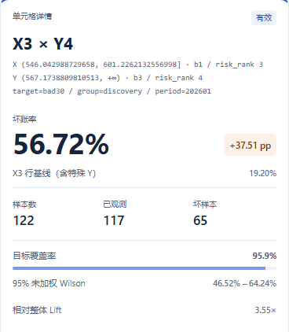

同一报告 · 真实选格与 Agent 证据
discovery / bad30 / 202601 · 移动预览为选格详情；完整矩阵见桌面图

{
"table": "cells",
"scope": {
"group": "discovery",
"target": "bad30",
"period": "202601"
},
"x_bin": "b1",
"y_bin": "b3",
"status": "valid",
"bad_rate": 0.5671550361233672,
"delta_vs_row": 0.3751357433077731,
"full_evidence": "preview-evidence.json"
}
公共 query_page 真实摘录 · 完整身份与引用见 preview-evidence.json · 合成数据